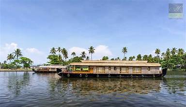
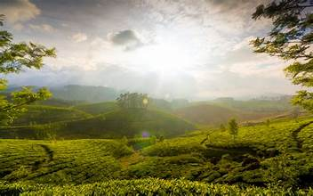
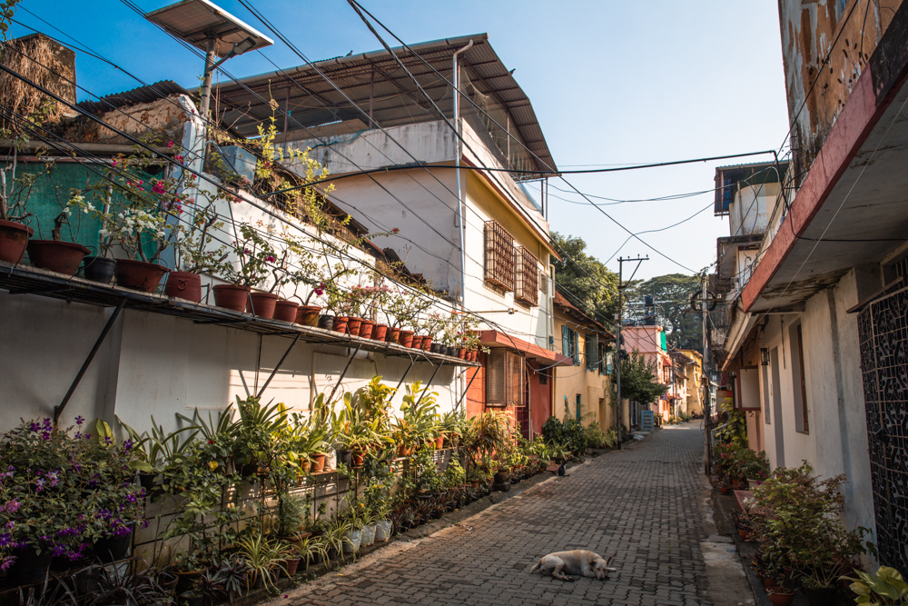
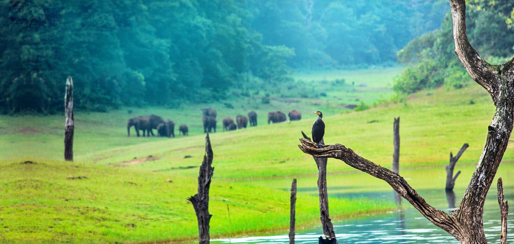
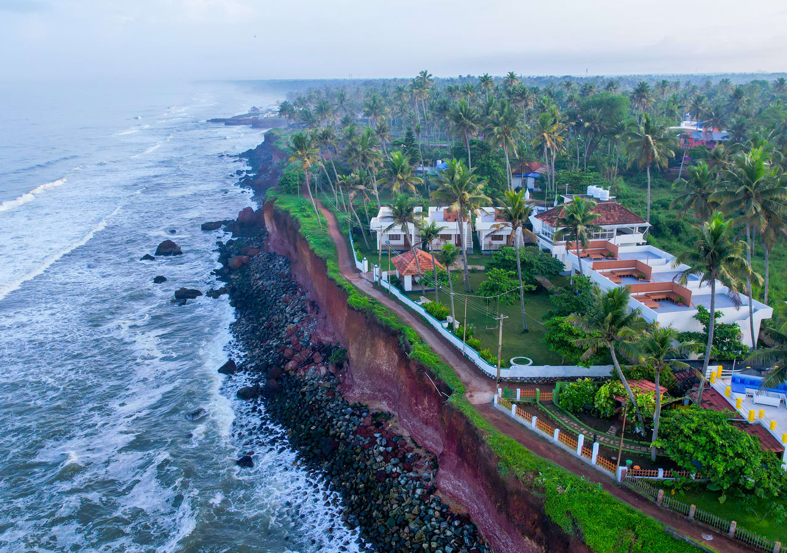
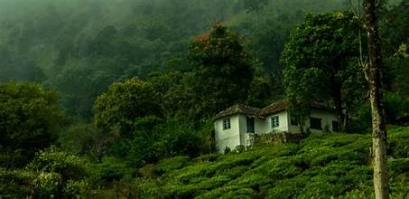
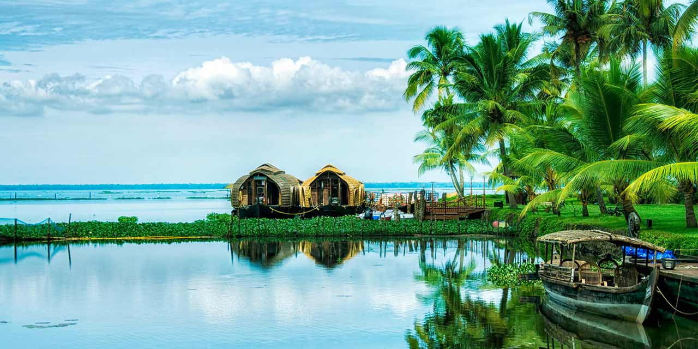

About Kerala
Kerala, known as "God's Own Country," is famous for its stunning landscapes, backwaters, and rich cultural heritage. From serene beaches to lush hill stations, Kerala offers a unique travel experience.Kerala is located on the southwestern coast of India and is renowned for its picturesque backwaters and houseboat tourism. The state features beautiful beaches like Varkala and Kovalam, along with hill stations such as Munnar, famous for their tea plantations and scenic landscapes. Kerala celebrates vibrant festivals like Onam and Thrissur Pooram, showcasing its rich cultural heritage. The cuisine is diverse, with dishes like appam and seafood often made with coconut. Traditional art forms include Kathakali and Mohiniyattam, reflecting the state's artistic legacy. Kerala has a strong agricultural sector, producing spices, rubber, and coconuts, and is a top tourist destination known for wellness and Ayurvedic treatments. Additionally, the state boasts one of the highest literacy rates in India.
Popular Tourist Places
Alleppey

Famous for its backwaters, houseboat cruises, and lush paddy fields. Visitors can enjoy a serene ride through the canals and witness the picturesque landscapes dotted with coconut palms. The annual Nehru Trophy Boat Race is a major attraction.
Munnar

A hill station known for its tea plantations, cool climate, and scenic views. Munnar is home to the famous tea gardens and the highest peak in South India, Anamudi. Tourists can explore the Eravikulam National Park and enjoy trekking routes that offer breathtaking views.
Fort Kochi

Known for its historical architecture, Chinese fishing nets, and vibrant art scene. Visitors can explore the ancient Fort Kochi area, which features colonial-era buildings, art galleries, and cafes. The Kochi-Muziris Biennale, an international art exhibition, attracts many art enthusiasts.
Thekkady

Home to the Periyar Wildlife Sanctuary, known for its diverse wildlife and spice plantations. Tourists can take a boat ride on Periyar Lake, enjoy nature walks, and visit spice gardens to learn about cardamom, pepper, and vanilla cultivation.
Varkala

A beach town known for its cliffs, beautiful beaches, and Ayurvedic wellness centers. Varkala Beach offers stunning views and a relaxing atmosphere, making it a great place for sunbathing and water sports. The nearby Janardhana Swamy Temple is also worth a visit.
Wayanad

A beautiful district known for its lush greenery, wildlife, and historical sites. Attractions include the Edakkal Caves with ancient petroglyphs, Banasura Sagar Dam, and Wayanad Wildlife Sanctuary, where visitors can spot elephants and other wildlife.
Kumarakom

Located on the banks of Vembanad Lake, Kumarakom is famous for its backwater tourism and bird sanctuary. Houseboat rides offer a unique experience to explore the tranquil backwaters and spot migratory birds in the sanctuary.